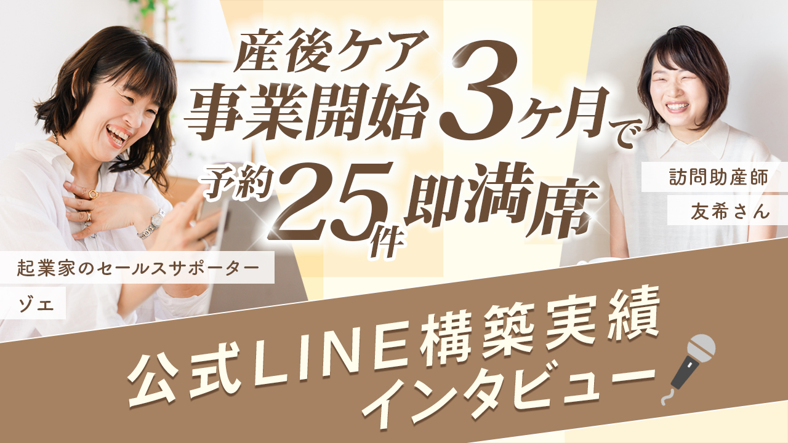
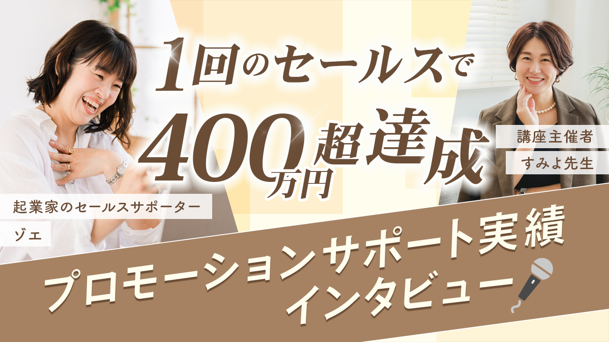

まずは無料動画を
受け取ってください。
動画を見た上で、もし「一緒にやってみたい」と
思っていただけたら、公式LINE内で
個別相談のご案内をします。
もちろん動画を受け取るだけでも大歓迎です。
▼ 無料動画を受け取る（公式LINEへ）※ 登録は30秒・完全無料・強引な勧誘はありません
公式LINEに登録した方限定
３本の無料動画をプレゼント中
登録30秒・完全無料・強引な勧誘はありません
こんな状況に、
心当たりありませんか？
発信は続けているのに、毎月売上がバラバラで不安が消えない
LINEに登録してもらっても、設定はあいさつ文だけ
「何かやらなきゃ」と思いながら、SNS投稿だけが続く
やることが多すぎて、何から手をつければいいか分からない
時間を使えば使うほど、本来の仕事が圧迫される
頑張っているのに売上があがらない。
それ、頑張りレベルの問題じゃなくて、
頑張る場所が少しズレているだけなんです。
発信しているのに
売上が安定しない本当の理由
理由は、一つです。
「発信」と「販売」の間に
橋がないということ。
── 今の状態 ──
SNS
発信
安定
売上
── LINE導線を作ると ──
SNS
発信
LINE
安定
売上
フォロワーが増えて、いいねもつく。
LINEにも登録してもらえてる。
でも売上には繋がっていない。
それは、登録した人に「なぜ今、あなたのサービスが必要なのか」を伝える仕組みがないから。
登録してくれた瞬間が一番熱量が高いのに、その後何も届かないから、気づいた時にはもう冷めている。
だから、毎月ゼロから集客し直して、発信して、疲弊して続かなくなる。。。
この負のスパイラルの正体は、
才能でも努力でもなく、構造が問題なんです。
インスタの発信は「点」でしかありません。どれだけ投稿を重ねても、それだけでは見込み客の信頼は育ちません。
点を「線」にする仕組みが、あなたのビジネスにはまだ足りていない。
その仕組みの作り方を、
この動画で全部話します。
無料動画「３本」の中身
フォロワーが増えても売れない
本当の理由、知っていますか？
売上が安定しない女性起業家が陥りがちな３つの罠を暴きます。「頑張っているのに結果が出ない」のは、あなたのせいではありません。その構造的な原因を、この動画で明らかにします。
売れ続ける人だけが知っている
セールスの３つの鉄則
苦手意識がスーッと消えて、自信を持って発信できるようになります。「売り込まなきゃいけない」という感覚が、そもそも間違っているんです。売れ続ける人が自然にやっていることを、私の経験から言語化します。
公式LINE×沼らせ設計で
自然と選ばれる導線の全体像を公開
LINEであなたが体験することが、そのままあなたのビジネスに転用できます。「作って終わり」ではなく、見込み客が自然に深くなっていく仕組みの全体像を、具体的に体感してみてください。
一度この仕組みができれば、
クライアント対応をしながらでも、
子どもと過ごしながらでも、
あなたが睡眠中でも、
導線は止まらずに動き続けます。
導線サポートを受けた方から
嬉しいお声をいただいています

▶青木ゆきさん
訪問産後ケアの助産師として独立開業何から手をつければいいか全くわからない状態からスタートして、インスタ → LINE → 予約フォームの流れが完全に機能するようになりました。「LINEもちゃんと稼働してる」とお客様から直接言われた時は、やってよかったと心から思いました。
事業開始2ヶ月半で予約の9割が埋まり、月25件の目標を毎月更新中。
吉田亜衣さん
発酵教室10年・講師育成講座を主催ヒアリングシートに書いただけの内容なのに、私が言いたかったことを丁寧に拾い上げてもらえて。色合いも世界観も、「自分で作るより私らしい」と感じるほどでした。SNSとLPで流れがきちんと整いました。
初回ローンチで400名がセミナーに申し込み。SNSの「点」が「線」でつながった瞬間でした。

▶小関すみよさん
親子教室の先生向け集客コンサル返事が早く、クオリティも高く、余計なストレスが一切なかった。不安で頭がいっぱいになりそうな時に「すみよさんは、救うべき人を救うだけでいい」と言ってもらえて、そこで原点に立ち返れました。
2週間で400万円以上の売上を達成。
制作者の紹介

SALES COACH
川副 真理子
売れる流れを作る
集客導線デザイナー ゾエ
YKK AP株式会社で中高層ビルの設計を8年経験後、貿易事務・コーヒー豆の直輸入販売・iPadイラスト制作等を経て、2022年次男の出産を機にオンライン起業。「細分化と整理」を武器に、クライアントのビジネス構築を伴走。
4歳と7歳の兄弟の母。次男の4ヶ月入院付き添い中にもビジネスを構築し続けた経験から、「どんな状況でも、具体化さえできれば行動できる！」をモットーにサポートをしています。
まずは無料動画を
受け取ってください。
動画を見た上で、もし「一緒にやってみたい」と
思っていただけたら、公式LINE内で
個別相談のご案内をします。
もちろん動画を受け取るだけでも大歓迎です。
▼ 無料動画を受け取る（公式LINEへ）※ 登録は30秒・完全無料・強引な勧誘はありません
Q & A
SNSで反応があるなら、
あなたの発信はすでに機能しています。
でも売上が安定しないなら、
問題はその先の流れがないことです。
動画を見終わった後、
「あ、だからか」と腑に落ちる瞬間が
あるはずです。
是非あなたのビジネスに活かしてください。
迷いをゼロに、成果を最速に。
一緒に叶えましょう。
集客導線デザイナー ゾエ
▼ 無料動画を受け取る（公式LINEへ）